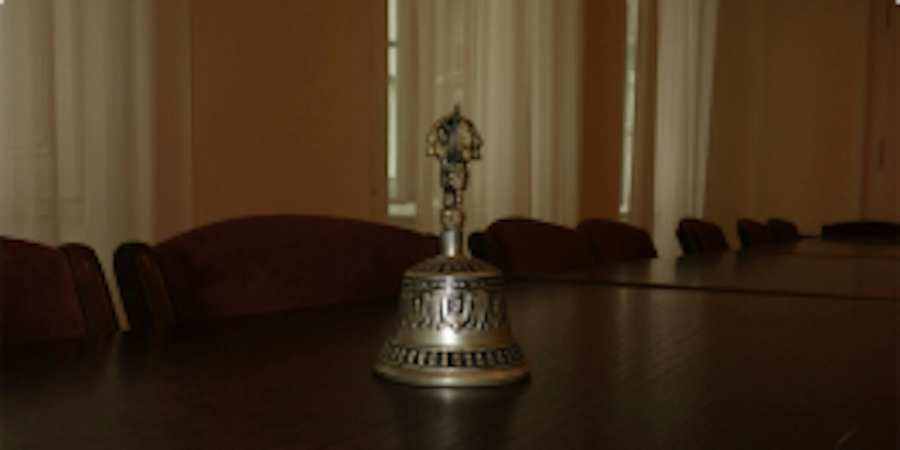
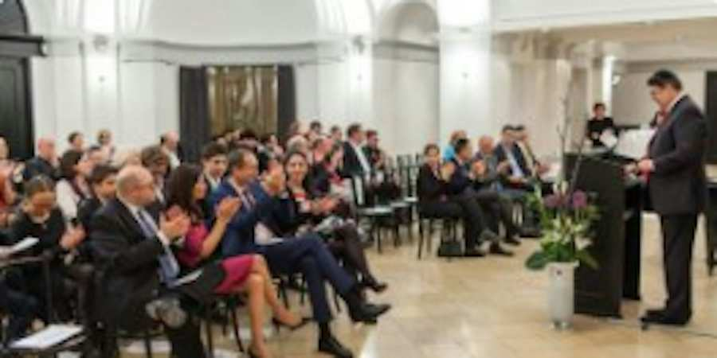
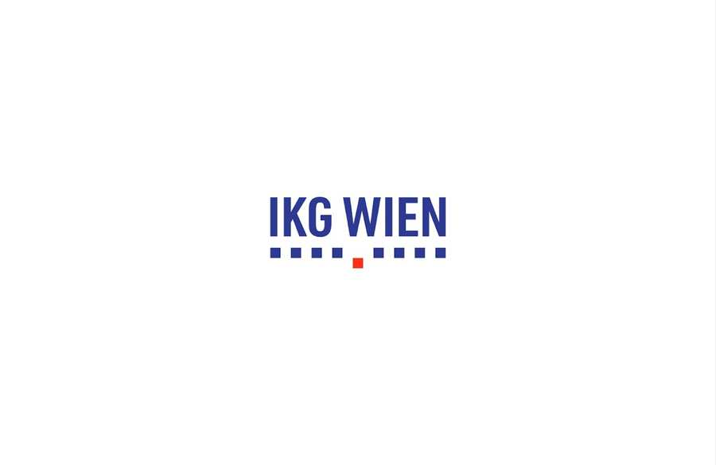

Geschichte der IKG
Das Jüdische Amulett von Halbturn
Bei Ausgrabungen bei Halbturn im Burgenland haben Archäologen der Universität Wien eine Silberkapsel entdeckt, die ein Goldblech mit Inschrift enthielt. Die Kapsel, die an einer Kette um den Hals getragen wurde, wird als Amulett zur Schadensabwehr gedeutet. Ähnliche Amulette sind auch aus anderen Grabungen bekannt. Die Inschrift auf dem Goldblech ist in griechischen Buchstaben und hebräischer Sprache abgefasst. Sie lautet: Schma Israeel Adonai Elohenu, Adonai achad. (hebr: „Höre, Israel, der Herr ist unser Gott, der Herr ist einer"). Dieses Amulett wird als wichtiger Beweis für die Anwesenheit von Juden in Pannonien betrachtet.
Platzhalter
Münzmeister Shlom
verwaltete im Auftrag Leopold V. das Lösegeld für Richard Löwenherz. 1196 wird Shlom von Kreuzfahrern ermordet.
Shlom., urkundlich erwähnt 1194 und in einer hebr. Chronik um 1200 „Salomon“ genannt, ist der erste namentlich bekannte Jude im Herrschaftsbereich der Babenberger. Leopold V. berief ihn vor 1194 als Münzmeister nach Österreich. Vermutlich verlor er seine Position 1194 nach dem Eintreffen des Lösegelds für den englischen König Richard Löwenherz, da Leopold V. damals eine aus führenden Wiener Bürgern bestehende Münzergenossenschaft ins Leben rief, der keine Juden angehören sollten.
1194 wurde in (Bad) Fischau ein Prozess entschieden, den das Kloster Formbach (Vornbach) am Inn wegen eines vermutlich in Grinzing (bei Wien) gelegenen Weinbergs gegen Shlom anstrengte. Die Umstände weisen darauf hin, dass er diesen Weinberg als Grundherr besaß, ihn 1194 an den Kloster verlor und durch eine Revision 1195 eine Entschädigung dafür erhielt. In der Stadt, im Bereich der heutigen Seitenstettengasse/Desider-Friedman-Platz besaß Shlom vier Grundstücke (Hofstätten), neben denen er eine Synagoge erbauen ließ (scola iudeorum), die urkundlich 1204 als noch bestehend geführt wird. Es handelt sich um die älteste Synagoge in Wien.
Dem Haushalt Shloms gehörten mindestens 15 jüdische Personen an, er hatte aber auch christl. Knechte und Mägde. 1196 verübte einer der christl. Diener in Shloms Haus einen Diebstahl, der gerichtlich verfolgt wurde. Die Frau des Diebs beklagte sich über das Vorgehen gegen ihren Mann bei sich in Wien aufhaltenden Kreuzfahrern, die hierauf in Shloms Haus eindrangen und ihn zusammen mit 15 anderen Juden erschlugen. Friedrich I. ließ die Rädelsführer hinrichten.
Shlom., urkundlich erwähnt 1194 und in einer hebr. Chronik um 1200 „Salomon“ genannt, ist der erste namentlich bekannte Jude im Herrschaftsbereich der Babenberger. Leopold V. berief ihn vor 1194 als Münzmeister nach Österreich. Vermutlich verlor er seine Position 1194 nach dem Eintreffen des Lösegelds für den englischen König Richard Löwenherz, da Leopold V. damals eine aus führenden Wiener Bürgern bestehende Münzergenossenschaft ins Leben rief, der keine Juden angehören sollten.
1194 wurde in (Bad) Fischau ein Prozess entschieden, den das Kloster Formbach (Vornbach) am Inn wegen eines vermutlich in Grinzing (bei Wien) gelegenen Weinbergs gegen Shlom anstrengte. Die Umstände weisen darauf hin, dass er diesen Weinberg als Grundherr besaß, ihn 1194 an den Kloster verlor und durch eine Revision 1195 eine Entschädigung dafür erhielt. In der Stadt, im Bereich der heutigen Seitenstettengasse/Desider-Friedman-Platz besaß Shlom vier Grundstücke (Hofstätten), neben denen er eine Synagoge erbauen ließ (scola iudeorum), die urkundlich 1204 als noch bestehend geführt wird. Es handelt sich um die älteste Synagoge in Wien.
Dem Haushalt Shloms gehörten mindestens 15 jüdische Personen an, er hatte aber auch christl. Knechte und Mägde. 1196 verübte einer der christl. Diener in Shloms Haus einen Diebstahl, der gerichtlich verfolgt wurde. Die Frau des Diebs beklagte sich über das Vorgehen gegen ihren Mann bei sich in Wien aufhaltenden Kreuzfahrern, die hierauf in Shloms Haus eindrangen und ihn zusammen mit 15 anderen Juden erschlugen. Friedrich I. ließ die Rädelsführer hinrichten.
Platzhalter
Judenprivileg in Wien
Kaiser Friedrich II. nimmt die Jüdinnen und Juden Wiens als "Kammerknechte" unter seinen Schutz. Als Kammerknechtschaft bezeichnet man den im 12. Jahrhundert ausgebildeten und im 13. Jahrhundert formalisierten Rechtsstatus der Juden als "Besitz" des römisch–deutschen Kaisers.

Judenordnung von Herzog Friedrich dem Streitbaren
1244 waren die Wiener Juden in die österreichische Judenordnung Herzog Friedrichs II. des Streitbaren eingeschlossen, die genaue Schutzbestimmungen, Fragen des Gerichts und das Pfandrecht behandelte. Sie wurde Vorbild für alle ost- und mitteleuropäischen Judenordnungen. 1376 erließen Albrecht III. und Leopold III. eine Judenordnung, deren Text nicht mehr bekannt ist. Unter den zahlreichen neuzeitlichen Judenordnungen ragen jene von Ferdinand I. (1536), Ferdinand II. (1624) und Maria Theresia (1753 und 1764) hervor.
Platzhalter
Erste Erwähnung einer Synagoge
Das Gebäude in Wien wurde erstmals 1204 erwähnt und hatte einen anfänglichen Bauumfang von nur 75 m² und bestand wohl weitgehend aus Holz. Das Gebäude hatte damals drei Räume, die Eingangshalle im Norden, die Frauenschul im Süden und die Männerschul in der Raummitte, nach orthodoxer jüdischer Tradition werden Männer und Frauen getrennt.
Die Synagoge befand sich im Zentrum des Judenviertels am heutigen Judenplatz, damals der Schulhof (1294 erwähnt), im Ersten Bezirk. Der Schulhof wurde nach dem dort stehenden Gotteshaus benannt. Im Mittelalter wurden Synagogen als schola, auf Deutsch Schule (Judenschule), bezeichnet, und das jiddische Wort für Synagoge ist noch immer Schil oder Schul.
12. Mai 1267 tagte im Stephansdom in Wien das 22. Provinzialkonzil, es wurde unter anderem bestimmt, dass die Juden keine neuen Synagogen errichten durften und alte nicht erneuern oder erhöhen und erweitern durften.[1] Auch die Konfiszierungen oder Zerstörungen der Synagogen wurden immer häufiger. So mussten sich die Juden meist mit bescheidenen Gebäuden zufriedenstellen. Außerdem belasteten die Verfolgungen, Konfiszierungen und die schweren Steuern die Gemeinde.
Die Synagoge befand sich im Zentrum des Judenviertels am heutigen Judenplatz, damals der Schulhof (1294 erwähnt), im Ersten Bezirk. Der Schulhof wurde nach dem dort stehenden Gotteshaus benannt. Im Mittelalter wurden Synagogen als schola, auf Deutsch Schule (Judenschule), bezeichnet, und das jiddische Wort für Synagoge ist noch immer Schil oder Schul.
12. Mai 1267 tagte im Stephansdom in Wien das 22. Provinzialkonzil, es wurde unter anderem bestimmt, dass die Juden keine neuen Synagogen errichten durften und alte nicht erneuern oder erhöhen und erweitern durften.[1] Auch die Konfiszierungen oder Zerstörungen der Synagogen wurden immer häufiger. So mussten sich die Juden meist mit bescheidenen Gebäuden zufriedenstellen. Außerdem belasteten die Verfolgungen, Konfiszierungen und die schweren Steuern die Gemeinde.
Überreste der Synagoge am Judenplatz
Wiener Gesera
1420-1421 fand die erste planmäßige Vernichtung der jüdischen Gemeinden im Herzogtum Österreich statt. Nach der Verbreitung von Gerüchten der Hostienschändung und Ritualmordlegenden wurde auf Befehl Albrechts V., durch Zwangstaufe bzw. Vertreibung, oder Verbrennung bei Verweigerung wurden die jüdischen Gemeinden Österreichs vernichtet.
Am 12. März 1421 wurde das Dekret Herzog Albrechts verkündet, das die Juden zum Tode verurteilte. Neben der allgemeinen „Bosheit“ der Juden wird als Begründung vor allem der sog. Hostienfrevel in Enns angeführt. Die Hinrichtung der verbleibenden Wiener Juden, 92 Männer und 120 Frauen, fand am selben Tag auf der Gänseweide in Erdberg statt (heute dem Weißgerberviertel zugerechnet). Später wurde die Asche der Verbrannten nach Gold und anderen Schmuckstücken durchsucht.
Nach der Gesera konfiszierte der Herzog den zurückgelassenen jüdischen Besitz und ließ die Synagoge am Judenplatz abreißen. Die Steine der ehemaligen Synagoge wurden für den Bau der Universität Wien verwendet.
Am 12. März 1421 wurde das Dekret Herzog Albrechts verkündet, das die Juden zum Tode verurteilte. Neben der allgemeinen „Bosheit“ der Juden wird als Begründung vor allem der sog. Hostienfrevel in Enns angeführt. Die Hinrichtung der verbleibenden Wiener Juden, 92 Männer und 120 Frauen, fand am selben Tag auf der Gänseweide in Erdberg statt (heute dem Weißgerberviertel zugerechnet). Später wurde die Asche der Verbrannten nach Gold und anderen Schmuckstücken durchsucht.
Nach der Gesera konfiszierte der Herzog den zurückgelassenen jüdischen Besitz und ließ die Synagoge am Judenplatz abreißen. Die Steine der ehemaligen Synagoge wurden für den Bau der Universität Wien verwendet.
Jüdischer Friedhof Seegasse
Samuel Koppel sichert die Erhaltung des Friedhofs Rossau (Seegasse)
Die Frage der Erhaltung des Friedhofs nach Ausweisung der Juden 1669/1670 beschäftige auch die Söhne eines der wohlhabendsten Repräsentanten der jüdischen Gemeinde, denn deren Vater war wenige Monate vor der Vertreibung erst verstorben und es galt ihnen als heilige Pflicht, das Grab – so wie dankenswerterweise auch alle anderen Gräber dort – vor einer Zerstörung geschützt zu wissen. Jakob Koppel b. Jeremia Isak ha-Levi Fränkel starb am Donnerstag, 17. April 1670, im Jahr der Vertreibung. Seine Söhne verhandelten erfolgreich eine Vereinbarung mit der Standesvertretung der Bürger der Stadt über den Erhalt des Friedhofs und der dort befindlichen Gräber und Grabmonumente.
Ein Vermögen (4.000 Gulden) zahlten sie der Wiener Bürgerschaft dafür. Zur Pflege des Areals ersuchten sie die Behörden, die bisherige Friedhofswärterfamilie Osterhammer weiterhin einzusetzen. Den Grabstein für ihren Vater konnten sie allerdings erst sechzehn Jahre später, am 22. Juli 1686 setzen lassen. Drei Jahre zuvor hatte Samuel Oppenheimer bei der Befreiung der Stadt aus der Zweiten Türkenbelagerung Wiens 1683 helfend eingegriffen; er war – nur sechs Jahre nach der Vertreibung der Gemeinde – der erste Jude gewesen, der wieder zurück an den kaiserlichen Hof nach Wien berufen worden war. Koppel Fränkels Söhne lebten zum Zeitpunkt der Steinsetzung bereits in Fürth (Bayern): wie sehr sie sich auch um ihre Wiederzulassung bemühten, nach Wien zurückkehren durften sie nicht.
Am 8. Jänner 1941 beschloss die Nationalsozialisten die Auflösung aller jüdischen Friedhöfe Wiens außer dem jüdischen Friedhof am Zentralfriedhof, was zur Schändung der Grabstätten durch Exhumierung und Entwendung von Grabsteinen führte. Dennoch gelang es einigen Juden, einen Teil der Grabsteine und Gebeine auf dem Zentralfriedhof zu verstecken. 1978 erwarb schließlich die Stadt das Areal, auf dem sich der Friedhof befindet. Der aus dem Jahr 1670 stammende noch immer gültige Vertrag über die Unantastbarkeit wurde unter Bürgermeister Leopold Gratz neu festgeschrieben. Damit wurde auch die Verpflichtung zur Betreuung und Instandsetzung übernommen.
1982 wurden die versteckten Grabsteine am Zentralfriedhof entdeckt und zur Seegasse überführt. In den letzten Jahren werden sie restauriert und an ihre historischen Plätze neu eingesetzt.
Ein Vermögen (4.000 Gulden) zahlten sie der Wiener Bürgerschaft dafür. Zur Pflege des Areals ersuchten sie die Behörden, die bisherige Friedhofswärterfamilie Osterhammer weiterhin einzusetzen. Den Grabstein für ihren Vater konnten sie allerdings erst sechzehn Jahre später, am 22. Juli 1686 setzen lassen. Drei Jahre zuvor hatte Samuel Oppenheimer bei der Befreiung der Stadt aus der Zweiten Türkenbelagerung Wiens 1683 helfend eingegriffen; er war – nur sechs Jahre nach der Vertreibung der Gemeinde – der erste Jude gewesen, der wieder zurück an den kaiserlichen Hof nach Wien berufen worden war. Koppel Fränkels Söhne lebten zum Zeitpunkt der Steinsetzung bereits in Fürth (Bayern): wie sehr sie sich auch um ihre Wiederzulassung bemühten, nach Wien zurückkehren durften sie nicht.
Am 8. Jänner 1941 beschloss die Nationalsozialisten die Auflösung aller jüdischen Friedhöfe Wiens außer dem jüdischen Friedhof am Zentralfriedhof, was zur Schändung der Grabstätten durch Exhumierung und Entwendung von Grabsteinen führte. Dennoch gelang es einigen Juden, einen Teil der Grabsteine und Gebeine auf dem Zentralfriedhof zu verstecken. 1978 erwarb schließlich die Stadt das Areal, auf dem sich der Friedhof befindet. Der aus dem Jahr 1670 stammende noch immer gültige Vertrag über die Unantastbarkeit wurde unter Bürgermeister Leopold Gratz neu festgeschrieben. Damit wurde auch die Verpflichtung zur Betreuung und Instandsetzung übernommen.
1982 wurden die versteckten Grabsteine am Zentralfriedhof entdeckt und zur Seegasse überführt. In den letzten Jahren werden sie restauriert und an ihre historischen Plätze neu eingesetzt.
More About IKG Vienna


